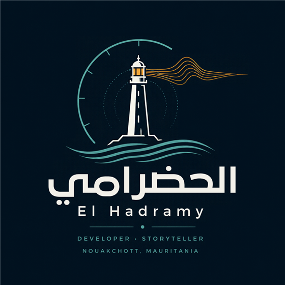

18°05′N · 15°58′W · NOUAKCHOTT
الحضرامي
4تطبيقات، بين مكتمل وتجريبي

نبذة
من نواكشوط، أكتب البرمجيات شغفًا، وأحرص على أن يجد فيها كلُّ مستخدمٍ لغتَه.
وأتّخذ النصّ الرسمي مرجعًا في كل ما أبنيه.
وأهتمّ بتراث موريتانيا ولغاتها الوطنية، وأنشر في قناتي مقاطع قصيرة.
تطبيقات
فكرة قيد الدراسة
جسور
منصّة صوتية لتعلّم لغاتنا الوطنية: الحسانية والبولارية والسوننكية والولفية.
قناتي على يوتيوب
زيارة القناة ↗